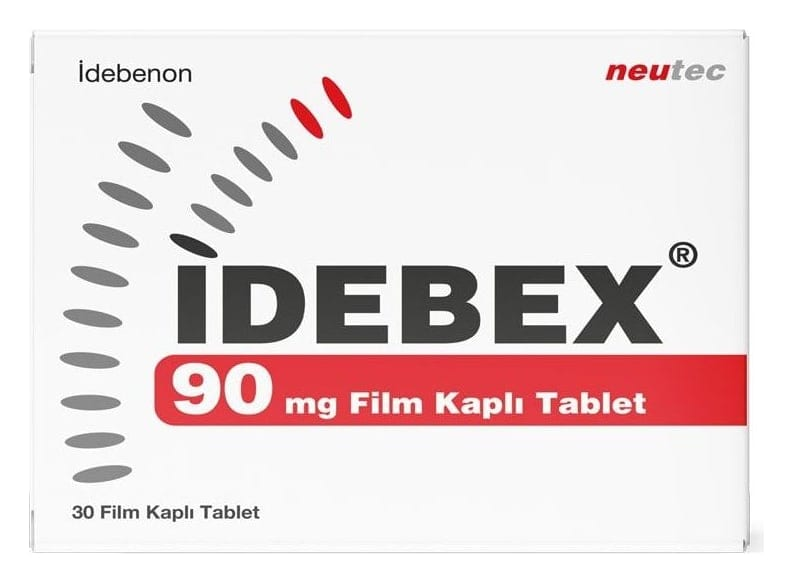

Idebex 90 mg Film Kaplı Tablet ,90 Film Kaplı Tablet

Ne için kullanılır
KT · Bölüm 1• İDEBEX etkin madde olarak 90 mg idebenon içerir. • İDEBEX, turuncu renkli, oblong, bikonveks film kaplı tabletler şeklindedir. • İDEBEX, 30 ve 90 film kaplı tablet PVC-PVDC/Alüminyum blister ambalaj içerisinde piyasaya sunulmaktadır. • İDEBEX; beyin damarlarının sertleşmesi, inme ve beyin kanaması sonucunda meydana gelen belirtilerin, yaşlanmaya bağlı akıl yürütme ve düşünmede eksiklik, beyin damarları ile ilgili hastalıkların, hafif ve orta şiddette Alzheimer tipi bunama ile ilişkili irade zayıflaması, konuşma bozuklukları, hafıza kaybı, dikkat süresinin kısalması, kas-beyin koordinasyon aktivitesinin azalması ve depresyon gibi kan damarları ve beyin ile ilgili hastalıkların belirtilerinin tedavisinde kullanılır.